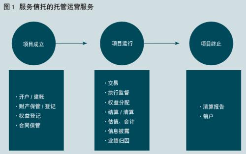
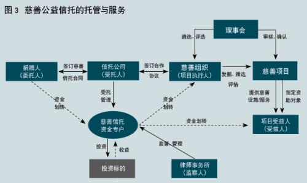

周萍：服务信托的内涵和发展空间
时间：2019-12-29 17:06:17来源：当代金融家
导读
服务信托起源于委托人、受益人各种各样不同的诉求，而不仅仅是投资需求，最能体现信托的制度价值，是可以将信托公司target="blank"target="blank" 与其他金融机构区别开来的业务。服务信托是海外信托业的重要形态，也是中国信托业的重要发展方向。服务信托的发展有利于整个资产管理行业的繁荣，也有利于满足社会的多元化需求。
来源 |《当代金融家》杂志2019年第12期，原题为《服务信托的内涵和发展空间》
从信托的发展历史看，信托最基础的功能是独立、安全地持有、保管信托财产。而受托人承担积极主动的投资、管理职责则是十九世纪后英美经济社会充分发展的结果；从海外信托业的实践看，信托是一种实现风险隔离、财务处理、税收筹划等多种目的的法律形式，财产的增值保值只是其中之一。中国信托公司在十多年的展业实践中，发展出资产流动化服务信托、证券投资 服务信托、结算清算服务信托、消费信托、员工持股信托等多种具有鲜明特色的业务类型。这些业务显著区别于投资银行业 务、资产管理业务和财富管理业务，它们的目标并非财产的保值增值，而在于安全、独立、便利等其他诉求；受托人的职责不在于投资管理，而在于托管运营。这类业务契合了信托的本源，有广阔的发展空间，但在展业实践中尚没有准确的命名，也缺乏清晰的类型化归纳，原有业务分类难以揭示这一类业务的本质属性。因此，提出了“服务信托”的概念。
服务信托的概念及特征
服务信托是指以信托财产独立性为前提，以资产账户和权益账户为载体，以信托财产安全持有为基础，为客户提供开户/建账/会计、财产保管/登记、交易、执行监督、结算/清算、估值、权益登记/分配、信息披露、业绩归因、合同保管等托管运营类金融服务的信托业务。
服务信托的核心是托管运营，简单来讲，就是管钱、管账、管报表。区别于投资银行业务、资产管理和财富管理业务，在服务信托业务中，信托公司仅提供托管、运营等管理服务，不提供投资决策或顾问、融资决策或顾问的服务。
服务信托起源于委托人、受益人各种各样不同的诉求，而不仅仅是投资需求。受托机构通过信托的形式帮助受托人实现这些目的。客户看重的不是受托机构的投资能力，而是信托的法律结构、受托机构的资格和“处理事务”的能力。从这个角度讲，服务信托最能体现信托的制度价值，是可以将信托公司与其他金融机构区别开来的业务。
信托目的
信托的目的不是信托财产的保值增值，而是风险隔离、财产权利规划分配、交易按约执行等其他目的，整个信托结构所追求的是独立、效率、公平、安全等价值，而不再局限于经济价值。服务信托的目的可概括为“受人之托，忠人之事”，而不是“受人之托，代人理财”。
业务核心
与投资银行、资产管理、财富管理业务不同，服务信托业务的核心问题不再是价值创造与风险承担，而在于依照信托文件，妥当处理信托事务。它考验的主要不是受托人的投资管理能力，而是服务功能的设计安排能力、执行事务的能力。
业务形态
服务信托业务的表现形态不是一个个金融产品 ，而是一套包括财产保管、数据处理、财产核算、产品估值、清算交割、利益分配、信息披露等全部或者部分环节的服务。这种服务依托于信托法 律关系，而且每一类服务均有标准化的流程。
信托财产
信托财产的形态不再局限于资金，可以是动产、不动产和股权、债权等各种财产权。服务信托围绕不同形态的信托财产提供不同内容的管理服务。
信托公司角色
信托公司不是“决策者”，而是“执行者”。委托人对每一项具体事务的执行细节均可以充分定制，对每一个委托事项下达具体指令并对执行结果均完全负责。执行信托文件（表现为监管、鉴证、分配？？）是受托人的主要义务。受托人责任的重点在于对事务的“忠实执行”，对执行的后果不承担任何责任。因此，在服务信托业务中，信托公司几乎没有信用风险、市场风险压力，主要承担操作风险。
服务信托业务的类型及种类
根据信托目的不同，服务信托可以分为两大类：一是为金融活动提供服务的业务，如证券投资服务信托、资产流动化信托和结算清算服务信托等；二是为非金融活动提供服务的业务，如消费信托、土地流转 信托、职工持股信托等。在各类信托中，信托公司又提供不同的服务组合。


为金融活动提供的服务
这类服务信托业务从表现形式上看，是一类金融产品。实践中，这一类业务很容易被误认为是投资银行业务或资产管理业务，实际上他们有很多本质的区别。虽然这类业务涉及投融资需求，但对信托公司而言，提供的是为保障投融资顺利实施的相关服务，如保障项目的风险控制、监督融资过程、完成支付等。目前，这类业务主要包括证券投资服务信托、资产流动化（资产证券化 ）信托、结算清算服务信托等。我们以证券投资服务信托为例。


证券投资服务信托是指委托人交付资金给信托公司，信托公司按照委托人指定的投资顾问 的投资建议，将信托资金投资于多种有价证券的信托服务。受托人提供的信托服务主要包括开户/建账/会计、财产保管/登记、交易、执行监督、结算/清算、估值、权益登记/分配、信息披露、业绩归因、合同保管等服务。
为非金融活动提供的服务
信托不止于金融，这一类服务信托业务是最好的注脚。目前，中国的这类服务信托业务主要是以传承、保障、公司治理和慈善公益等为信托目的，包括消费信托、土地流转信托、慈善与公益信托、遗嘱执行信托、企业年金受托业务（及账户管理业务）信托、职工持股信托（及股权激励 信托等薪酬福利类信托）、股权信托（及表决权信托、经营权信托）等。但依据国外的实践，这类服务信托业务是国外金融机构信托业务盈利的主力军。以慈善公益信托为例，慈善公益信托是委托人基于慈善目的，依法将其财产委托给受托人，由受托人按照委托人意愿以受托人名义进行管理和处分，开展慈善活动的行为。
近年来，随着信托公司开展的慈善信托成为许多慈善人士的首选，国内慈善信托的模式逐渐丰富起来，如起源于欧美的慈善先行信托（Charitable Lead Trust，CLT）也开始在国内出现。慈善先行信托是指信托利益优先用于公益慈善捐赠，之后才分配给指定受益人的信托。2019年，中信信托 完成国内首单慈善先行信托签约。该信托每年优先分配100万元人民币 信托利益用于慈善捐赠，以每人每年1万元的标准发放给受捐赠人，资助100名云南大学贫困新生至本科毕业。慈善先行信托创设了信托利益分配的“私益”与“公益”的混合，有效结合了个人信托与社会公益事业。
开展服务信托业务的基础
服务信托业务的核心内容是托管、运营，考验的是金融机构的信用和管理能力。信托公司必须建立一个标准化体系，才能使服务信托规模化。而这在很大程度上依托于账户和金融科技。
标准化体系
和投资银行业务、资产管理业务、财富管理业务相比，服务信托的手续费率一般较低。规模化是其成为一种业务是必备条件。没有规模化，服务信托就只能是个别的创新，没有作为一种商业模式的意义。我们认为，服务信托可以实现规模化，可能成为未来信托资产规模的重要组成部分，创造规模化效益。在这一点上，海外的信托业实践已经给了证明，国内证券投资服务信托、信贷资产证券化信托等业务也有较大的体量。
规模化的前提是标准化，信托公司必须建立起一整套符合市场需求的标准化体系，包括业务结构设计、流程控制、账户管理、交易管理、法律文本设计、操作风险防控、信息系统支持等方面。在该类业务上的竞争主要不是个人能力的竞争，而是公司标准化服务能力的竞争。这对习惯“非标”业务的信托公司，不能不说是一种挑战。
账户
账户是服务信托的载体，各类服务均需要通过账户来操作和实现，服务的结果也体现在账户之中。在服务信托的各种运用场景中，账户系统都发挥着支撑性作用。
在服务信托中，三类账户起到基础性作用。一是权益账户。受托人为用户建立受益权权益账户，这是实现受益人权益登记确认、转让、质押和信托利益清算、分配的基础。二是财产账户。受托人用该类账户对用户设立的财产进行初始登记，对财产运营情况、财产类型变化及财产变动登记进行管理。这是托管资产的载体，委托人交付资产的增减变动及其结果都通过资产账户来体现。三是资金账户。受托人为用户设立的信托在银行以信托公司名义开设信托资金专户，可用于对用户设立的信托项下现金形态信托财产的流入和流出进行管理。
借助服务信托的账户系统，可以在不同的交易场景中，引入信托的托管运营服务功能，能够有效提高交易效率，保障交易安全。一方面，信托公司作为持牌金融机构，开展的服务信托业务以财产信托保管为基础，受到信托法的保护，通过账户系统与客流、信息流、商流、资金流 实现深入的结合，能够保证基础交易信 息的准确性和交易的安全性。另一方面，服务信托的账户系统使得用户的基础交易更为透明，信托供公司作为管理账户的第三方，能够降低交易双方的信息不对称。服务信托的账户系统，还能够为监管机构监管不同类型经济场景中的基础交易流向提供有效手段，为行业健康发展奠定基础。
服务信托的业务空间及发展方向
通过对美国、日本和我国台湾地区信托业态的比较分析，服务信托是海外信托业的重要形态，也是中国信托业的重要发展方向。服务信托的发展有利于整个资产管理行业的繁荣，也有利于满足社会的多元化需求。
服务信托具有最庞大的业务规模
服务信托中，托管是最具规模的业务形态。在资产管理规模（Assets Under Management，AUM）之外，托管资产规模（Assets Under Custody，AUC）、资产服务规模（Assets Under Administration，AUA）的概念被提出。根据调研机构《机构投资者》（institutional investor）的统计，2016年6月末，全球前15大托管机构的托管规模（AUC）为131.15万亿美元 。而同期全球资产管理规模（AUM）是69.1万亿美元。美国不仅拥有全球最大的托管市场，同时也拥有最大的托管业务提供商。2016年末，纽约梅隆银行、道富银行和J.P.摩根公司分别托管了25.08万亿、21.35万亿、20.47万亿美元，是全球最大的三家托管机构。

服务信托拥有最多样的业务形态
美国的服务信托业务主要体现为托管运营。以美国纽约梅陇银行为例，服务信托业务可分为个人信托及代理账户、员工福利与退休相关的信托及代理账户、公司信托及代理账户、投资管理及投资顾问代理账户、基金与捐赠信托及代理账户、托管和保管账户。
在日本，投资信托和再信托是最主要的资产管理型信托类型。证券投资信托是最主要的投资信托类型，是指以证券为投资标的的信托业务。再信托的最主要应用是在年金管理上。日本对年金资产进行集中管理，通过再信托来实现。信托银行（原信托的受托人）把其受托的年金信托的资产管理再信托给专门的受托机关（再信托受托人）。通过再信托，最终的受托人可以从多个受托人处得到管理信托财产的委托，实现规模利益、提高资产管理效率。
服务信托的公共治理功能
服务信托在很多场景中，可以发挥公共治理的功能，弥补公共领域政府的缺位和市场的失灵。前面我们所介绍的，美国的房地产交易托管服务、日本的顾客分别金信托、代管信托、台湾地区的消费信托、交易中介信托、中国的消费信托、土地流转信托等等许多业务形态，已经提供了丰富的例证。
服务信托可以在一个失衡的结构中引入中立的第三方、独立的看管人、忠实的执行者，服务信托的结构所追求的是独立、效率、公平、安全等等价值。因此，服务信托天然能够与公共治理相契合。服务信托的目的，可以服务于个人和企业，也可以服务于政府和社会，解决各种公共领域的现实难题，推动公共治理、增进社会公益。在经济结构、社会结构转型发展的中国，服务信托具有极大的社会价值，其中当然也隐含巨大的商业价值。
服务信托与其他业务的协同发展
服务信托的发展，使受托机构掌握了大量资产流动的方向、配置偏好、客户信用情况、销售渠道等资源，必然会促进投资银行、资产管理、财富管理等业务的发展。全球最大的两家托管银行（道富银行和纽约梅隆银行），在资产管理领域也排名全球前十。
对于服务信托的重要性，资本市场 给出了最有力的注解。在1998？2017年的绝大部分时间里，托管专业银行纽约梅隆银行和道富集团的P/B（市账率）估值水平都显著高于传统商业银行，如美国银行、花旗银行 等。2017年，纽约梅隆银行和道富集团的P/B分别达到target="blank "通、花旗集团则分别仅为1.24倍、1.05倍，均低于托管专业银行估值水平。
目前来看，投资银行和资产管理业务的手续费率逐年下滑，服务信托的手续费率虽然在绝对值上低于其他业务，但由于在规模上的巨大优势，具有很大的盈利空间。信托公司作为专业的持牌金融机构，服务信托业务可成为重要的业务板块，持续产生收入，并创造新的业务机会。从海外资产管理公司发展案例来看，服务信托业务发展较好的公司，资产管理业务也同样发展较好，这是值得我们借鉴的。
（作者为中信信托金融实验室负责人、博士后工作站执行站长、教授、博士，中国国际经济 咨询公司副总经理。本文部分内容来源于：王道远、周萍、翁两民、贺洋，《信托的逻辑：中国信托公司做什么》，中信出版 (行情300788,诊股 )社，2019.11）
- 上一篇：信托行业2019年十大事件盘点
- 下一篇：信托产品四大风险处置手段是什么？
相关阅读
焦点文章
- target="blank "
-

2021信托公司综合实力排名
target="blank "
-

中融信托首次遭罚
-
target="blank "

半数信托“转型”消费金融
-

你以为你没买过信托 其实你买过许target="blank "
-

26万亿信托产品将全部获取身份证明